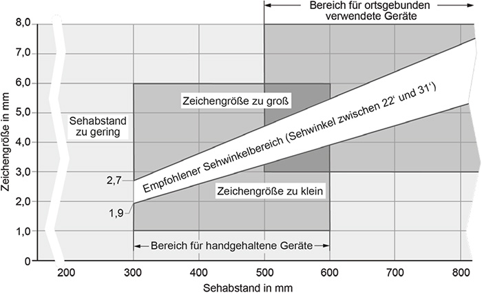
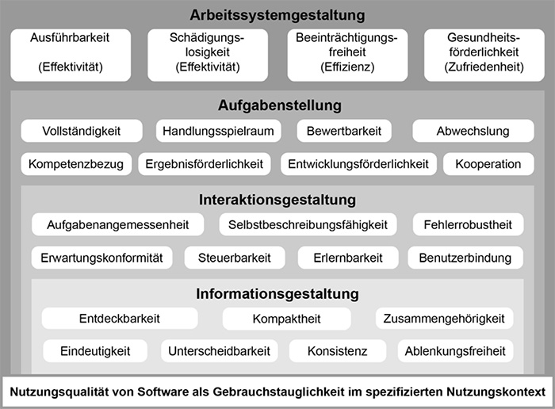
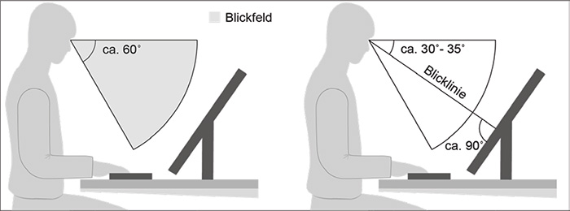
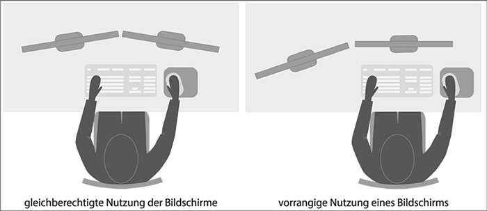
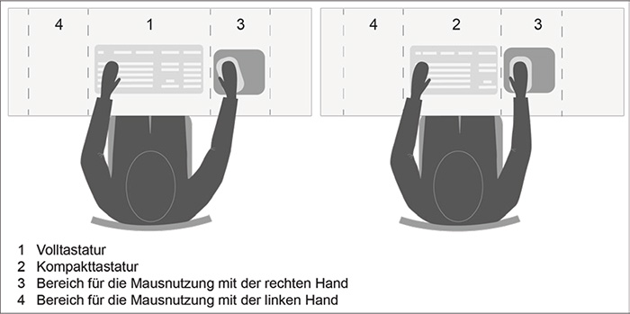
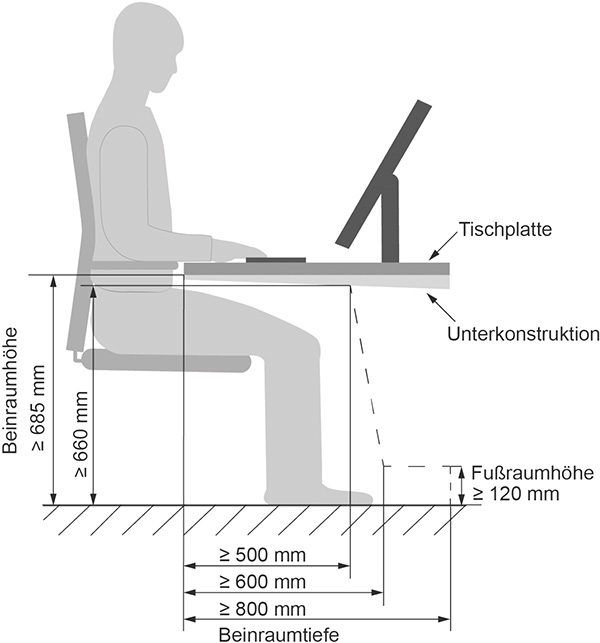
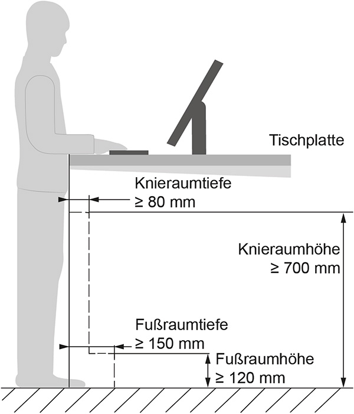
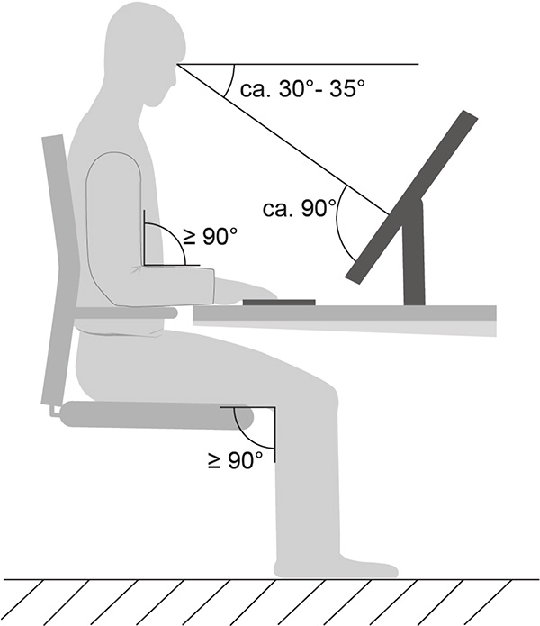
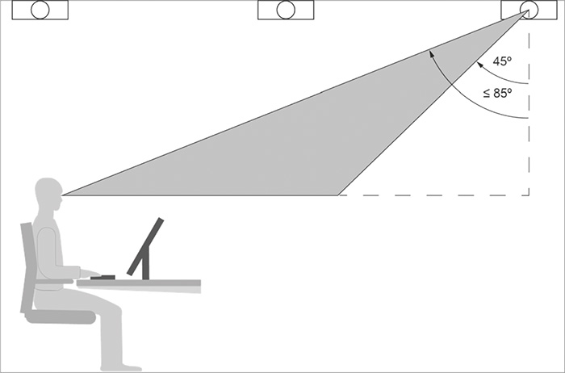
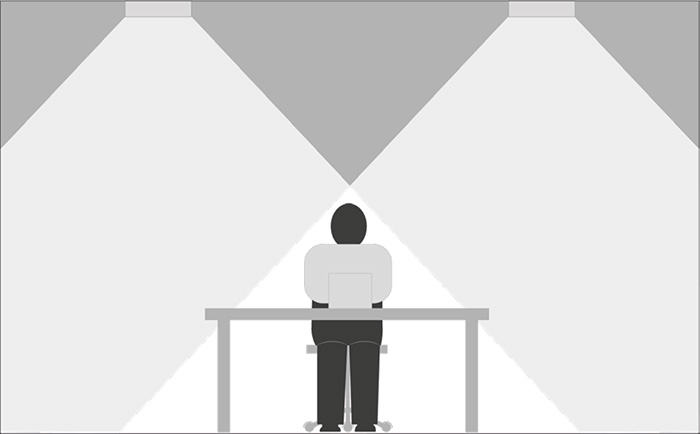

Bildschirmarbeit umfasst Tätigkeiten an Bildschirmgeräten, die durch die Mensch-Arbeitsmittel-Interaktion gekennzeichnet sind. Bezogen auf die jeweiligen Arbeitsaufgaben und Arbeitsumgebungsbedingungen ergeben sich daraus Anforderungen an die Ein- und Ausgabe von Informationen. Bei der Gestaltung von Bildschirm- und Telearbeitsplätzen bestehen jeweils Anforderungen an die Arbeitsmittel (Hard- und Software) selbst, an die maßliche Arbeitsplatzgestaltung und an die Arbeitsumgebung. Werden tragbare Bildschirmgeräte für die ortsveränderliche Verwendung genutzt, müssen diese für die jeweiligen Arbeitsaufgaben und Arbeitsumgebungsbedingungen geeignet sein.
(1) Bildschirme stellen die wesentliche Schnittstelle der Informationsweitergabe vom Bildschirmgerät an den Menschen dar. Für eine ergonomisch günstig gestaltete Belastungssituation bei der Tätigkeit mit Bildschirmen und Bildschirmgeräten, insbesondere für die Augen, müssen Text- und Grafikdarstellungen auf dem Bildschirm entsprechend der Arbeitsaufgabe und dem Sehabstand scharf und deutlich sowie ausreichend groß sein. Der Zeichen- und der Zeilenabstand müssen der Schriftart angemessen sein. Die Zeichenhöhe und der Zeilenabstand müssen auf dem Bildschirm ergonomisch in diesem Rahmen individuell eingestellt werden können.
(2) Eine gute Zeichenschärfe ist dann gegeben, wenn sie auf dem gesamten Bildschirm der Zeichenschärfe von gedruckten Zeichen möglichst nahekommt. Hierfür soll ein Bildschirm in der höchsten darstellbaren Auflösung (physikalischen Auflösung) betrieben werden.
Hinweise:
Helligkeitsschwankungen der Text- oder Grafikdarstellung sowie Veränderungen von Zeichengestalt oder Zeichenort werden als sehr störend empfunden. Die Darstellung auf dem Bildschirm oder Bildschirmgerät muss daher verzerrungs- und flimmerfrei sein.
Hinweise:
(1) Für die ortsgebundene Verwendung von Bildschirmgeräten sollen die Zeichenhöhen zur Darstellung des Arbeitsinhaltes in Abhängigkeit vom Sehabstand nach Tabelle 1 bzw. Abbildung 1 verwendet werden. Funktions- und Schaltflächen zur Programmsteuerung dürfen abweichend gestaltet werden, insbesondere, wenn grafische Elemente die Erkennbarkeit der Funktionalität unterstützen.
| Tab. 1: | Empfohlene Zeichenhöhe in Abhängigkeit vom Sehabstand (Quellen: DGUV Information 215-410, DIN EN ISO 9241-303:2012-03) |
| Sehabstand (in mm) | Empfohlene Zeichenhöhe (in mm) |
| 500 | 3,2 bis 4,5 |
| 600 | 3,9 bis 5,5 |
| 700 | 4,5 bis 6,4 |
| 800 | 5,2 bis 7,3 |

| Abb. 1: | Empfohlene Zeichenhöhe in Abhängigkeit vom Sehabstand, entsprechend einem Sehwinkel von 22 bis 31 Bogenminuten (in Anlehnung an: DIN EN ISO 9241303:2012-03) |
(2) Für größere Sehabstände an Bildschirmgeräten (z. B. in Leitwarten) gilt: Mindestzeichenhöhe [mm] = Sehabstand [mm] / 155.
(3) Zu große Zeichen verhindern den Lesefluss, deshalb soll eingehalten werden: Maximale Zeichenhöhe [mm] = Sehabstand [mm] / 110.
(4) Besteht die Sehaufgabe überwiegend darin, den gesamten Bildschirminhalt auf einen Blick zu erfassen, z. B. in einer Leitwarte, können die in Tabelle 2 angegebenen Sehabstände zur Bewertung herangezogen werden. Ausschlaggebend ist die jeweilige Arbeitsaufgabe.
Hinweis:
Zur groben Abschätzung des Sehabstandes dient die Formel: Bildschirmdiagonale [mm] · 1,6.
| Tab. 2: | Empfohlener Sehabstand in Abhängigkeit der Bildschirmdiagonale, wenn der gesamte Bildschirminhalt ohne Kopfbewegung erfasst werden soll (Quelle: DGUV Information 215-410) |
| LCD-Bildschirmdiagonale (in Zoll bzw. mm) | Sehabstand (in mm) |
| 13/330 | 500 |
| 15/381 | 600 |
| 17/432 | 700 |
| 19/483 | 800 |
| 22/559 | 900 |
| 24/610 | 1000 |
(5) Die verwendete Software muss so eingestellt werden können, dass sie die vorhandene Hardware unterstützt und so die Zeichenschärfe gewahrt bleibt. Die Zeichenhöhen müssen im Nutzungskontext anpassbar sein. Des Weiteren soll im Rahmen der barrierefreien Gestaltung von Arbeitsstätten (siehe ASR V3a.2 "Barrierefreie Gestaltung von Arbeitsstätten") eine Sehbehinderung ausgeglichen werden können (z. B. durch Vergrößerung von Zeichen). Durch eine solche Zeichenhöhenveränderung soll weder die Lesbarkeit von Zeichen durch An- oder Abschneiden der Ober- oder Unterlängen noch die Funktionalität der Anwendung durch Ausblenden wichtiger Bildschirminhalte eingeschränkt werden.
(6) Für tragbare Bildschirmgeräte, die handgehalten genutzt werden (z. B. Scanner im Logistikbereich oder Handterminals in der Gastronomie), sind unter Beachtung des Sehabstands Zeichenhöhen entsprechend Abbildung 1 erforderlich. Für solche handgehaltenen Geräte können Sehabstände zwischen 300 mm und 600 mm zur Bewertung herangezogen werden. Es handelt sich um den Bereich zwischen dem Nahpunkt für normalsichtige oder sehfehlerkorrigierte Augen von Erwachsenen und der maximalen Armlänge.
(1) Helligkeit und Kontrast müssen eingestellt werden können.
Hinweis:
Eine einfache Einstellbarkeit und Anpassbarkeit der Helligkeit und des Kontrasts ist gegeben, wenn die Bedienelemente im Blickfeld des Beschäftigten liegen und leicht betätigt werden können.
(2) Je nach Tätigkeit sind unterschiedliche Betrachtungswinkel auf den Bildschirm bzw. mehrere Bildschirme notwendig (z. B. müssen mehrere Bildschirminhalte aus unterschiedlichen Positionen betrachtet werden können). Gegebenenfalls muss auch berücksichtigt werden, dass es unerwünscht ist, wenn andere Personen den Bildschirminhalt einsehen können. Bildschirm und Bildschirmgeräte sind geeignet, wenn die Darstellungen mit dem für die Tätigkeit vorgesehenen Betrachtungswinkel (z. B. schräg nach unten) gut erkennbar sind.
Hinweise:
(3) Kontraste auf dem Bildschirm sollen denjenigen von gedruckten Vorlagen möglichst nahekommen. Der Kontrast, z. B. als das Leuchtdichteverhältnis zwischen Zeichenuntergrund und Zeichen, soll mindestens 4:1 betragen.
(1) Software muss ergonomisch gestaltet und gebrauchstauglich sein, damit Beschäftigte ihre Arbeitsaufgaben effektiv, effizient und zufriedenstellend erledigen können.
(2) Aufgaben, die mithilfe von Software bearbeitet werden, müssen für die Beschäftigten ausführbar sein. Deshalb muss sichergestellt werden, dass die zur Aufgabenerfüllung erforderlichen Werkzeuge und Informationen durch die Software bereitgestellt werden. Auf unnötige Funktionen und Angaben soll dabei verzichtet werden.
(3) Software soll Informationen in einer zugänglichen, verständlichen und leserlichen Form bereitstellen.
(4) Software muss individualisierbar sein, damit deren Nutzung und die Darstellung von Informationen an die Bedarfe, Bedürfnisse und Fähigkeiten der Beschäftigten angepasst werden können.
(5) Die Anpassbarkeit von Software an Hardware (z. B. Bildschirme, Tastatur und Maus) und Arbeitsumgebungsbedingungen (z. B. Beleuchtung) muss gewährleistet sein.
(6) Software muss selbstbeschreibungsfähige Dialoge verwenden, d. h., Softwaredialoge müssen verständlich gestaltet sein und durch Rückmeldung unmittelbar oder auf Verlangen angemessene Erklärungen liefern. Software muss den Erwartungen der Beschäftigten entsprechen (Erwartungskonformität) und zum Nutzungskontext sowie zur Arbeitsaufgabe passen.
(7) Eine Übersicht relevanter Gestaltungskriterien ist in Abbildung 2 dargestellt. Diese sind bei der Auswahl von Software zu berücksichtigen.

| Abb. 2: | Hierarchie von Gestaltungskriterien in der Softwareergonomie (in Anlehnung an DGUV Information 215-450) |
(1) Beim Einrichten und Betreiben von Bildschirmarbeitsplätzen kommt der Anpassung des Arbeitsplatzes mit seinen Arbeitsmitteln und Mobiliar an die jeweiligen Beschäftigten eine hohe Bedeutung zu. Angepasst werden müssen insbesondere:
(2) Oberflächen, Kanten und Ecken an Arbeitsmitteln und Mobiliar (z. B. Tischplatten, Tastaturen) müssen durch Formgebung oder Bearbeitung so gestaltet sein, dass Verletzungen vermieden werden. Dies wird durch Entgraten, Umbördeln sowie Gestalten von Kanten und Ecken mit ausreichenden Radien erreicht. Sofern die Materialdicke es zulässt, ist für Kanten und Ecken, mit denen Beschäftigte bei ihrer Tätigkeit in Berührung kommen, mindestens ein Radius von 2 mm erforderlich.
Hinweis:
Zu empfehlen sind Radien von 3 mm oder mehr.
(3) Die Flächen von Arbeitsmitteln, mit denen Beschäftigte im Rahmen ihrer Tätigkeit in Berührung kommen, dürfen keine unzuträgliche Wärmeableitung zulassen. Sicherheitsrelevante Teile müssen aus Werkstoffen bestehen, die hinreichend alterungsbeständig sowie ausreichend gegen Korrosion geschützt sind.
Hinweis:
In den meisten Fällen sind Oberflächen von Arbeitsplatten, Sitzflächen, Armauflagen, Tastaturen und sonstigen Eingabemitteln aus Glas oder Metall ungeeignet.
(1) Bildschirme müssen ohne erhöhten Kraftaufwand höhenverstellbar sowie dreh- und neigbar sein, damit Beschäftigte eine neutrale Kopfhaltung einnehmen können (siehe Abbildung 3).
Hinweis:
An Arbeitsplätzen mit büroähnlichen Tätigkeiten soll auf eine Absenkbarkeit der Unterkante der Bildschirme möglichst bis auf die Tischoberfläche geachtet werden.
(2) Bildschirme und Bildschirmgeräte sollen im Blickfeld angeordnet sein (siehe Abbildung 3). Bildschirme sollen so aufgestellt werden, dass die Blicklinie ca. 30° bis 35° aus der Horizontalen nach unten geneigt ist. Die Blicklinie soll im Bereich der Bildschirmmitte in einem Winkel von ca. 90° auf die Bildschirmoberfläche auftreffen.
Hinweis:
Dies dient der Optimierung der Informationswahrnehmung sowie der Vermeidung erhöhter Augenbelastung durch Blicksprünge und Einstellung der Augenlinse (Akkommodation).

| Abb. 3: | Blickfeld und Blicklinie in einer neutralen Kopfhaltung (ohne Kopfbewegung, aber mit Augenbewegung) |
(3) Bildschirmgröße und -form sind entsprechend der Arbeitsaufgabe und den damit erforderlichen Softwareanwendungen auszuwählen und bei Änderungen anzupassen. Für die Textverarbeitung, die Kalkulation kleiner Tabellen oder den E-Mail-Verkehr sind Bildschirme im Normalformat (z. B. Seitenverhältnis 4:3) mit einer Bildschirmdiagonale von mindestens 17 Zoll bzw. 432 mm (empfohlen mindestens 19 Zoll bzw. 483 mm) geeignet.
(4) Für die Arbeit mit mehreren geöffneten Softwareanwendungen bzw. sogenannten "Fenstern", z. B. bei Bildbearbeitungen, umfangreichen Tabellenkalkulationen etc., sind zwei Bildschirme bzw. Bildschirme im Breitbildformat (z. B. Seitenverhältnis 16:9) zu bevorzugen, damit die Zeichenerkennung erhalten bleibt.
(5) Grundsätzlich sind an Bildschirmarbeitsplätzen Bildschirme mit entspiegelten (matten) Displays und matten Gehäuseoberflächen zu verwenden (für abweichende Fälle siehe Abschnitt 6.3.14, Absatz 12).
(6) Die Gehäusefarbe soll der wesentlich genutzten Hintergrundfarbe der Softwareanwendung und der Arbeitsumgebung angepasst sein.
Hinweis:
Das bedeutet bei Office-Software-Anwendungen mit schwarzen Zeichen auf hellem Grund demnach eine helle Gehäusefarbe im Sehbereich der Beschäftigten, ggf. auch eine helle Rückseite von Geräten z. B. bei gegenüberliegenden Arbeitsplätzen.
(1) Wenn die Arbeitsaufgabe es erfordert, dass mehrere Softwareanwendungen gleichzeitig geöffnet sein müssen, z. B. bei Bildbearbeitungen, umfangreichen Textanwendungen oder Tabellenkalkulationen, ist im Rahmen der Gefährdungsbeurteilung zu prüfen, ob ein großer Bildschirm oder mehrere Bildschirme nebeneinander notwendig sind. Bei der Verwendung von mehreren Bildschirmen oder Bildschirmgeräten nebeneinander sollen Darstellungsart (positiv/negativ), Auflösung und Helligkeit der Anzeige sowie Farbgebung der Bildschirmgehäuse aufeinander abgestimmt sein. Je nach Aufstellung der Bildschirme müssen diese für einen großen Betrachtungswinkel geeignet sein, damit Bildschirminhalte aus verschiedenen Betrachtungswinkeln gut erfasst werden können.
(2) Die Anordnung der Bildschirme im Blickfeld richtet sich nach der Häufigkeit ihrer Nutzung (siehe Abbildung 4). Erfordert die Aufgabe die wechselseitige Verwendung mehrerer Bildschirme (gleichberechtigte Nutzung, Abbildung 4 links), sind die Bildschirme im Blickfeld des Beschäftigten möglichst nahe nebeneinander aufzustellen, um übermäßige Kopf- und Augenbewegungen zu vermeiden. Zu allen Bildschirmen müssen annähernd gleiche Sehabstände eingehalten werden. Wird dagegen ein Bildschirm vorrangig genutzt, ist er zentral anzuordnen (Abbildung 4 rechts).
Hinweis:
Für die seitliche Sichtbarkeit von Inhalten auf LCD-Bildschirmen sind Displays mit TN-Anzeige ungeeignet; geeignet sind Bildschirme mit VA-, PVA- oder IPS-Anzeige (TN = Twisted Nematic, VA = Vertical Alignment Panel, PVA = Pattern Vertical Alignment, IPS = In-Plane-Switching).

| Abb. 4: | Anordnung mehrerer Bildschirme |
(3) Werden unterschiedliche Eingabemittel zur Nutzung der Bildschirme und Bildschirmgeräte benötigt, so müssen diese eindeutig zum entsprechenden Bildschirm zugeordnet werden können, z. B. durch Beschriftung, Gruppierung, farbliche Kennzeichnung.
Werden tragbare Bildschirmgeräte ortsgebunden verwendet, sind für eine neutrale Körperhaltung und angemessene Sehbedingungen auf die Bildschirmoberfläche eine separate Tastatur und in Abhängigkeit von der zu verrichtenden Tätigkeit eine separate Maus notwendig. Durch den dadurch vergrößerten Sehabstand (siehe Abschnitt 6.1.3) ist in der Regel ein größerer, ggf. separater Bildschirm notwendig. Die Kopplung der Geräte kann z. B. mithilfe einer Dockingstation oder kabellos erfolgen. Weiterhin gelten die Anforderungen an dauerhaft eingerichtete Bildschirmarbeitsplätze, die in dieser ASR bzw. in Nummer 6.1 des Anhangs der ArbStättV formuliert sind.
(1) Tastaturen müssen in neutraler Körperhaltung bedienbar sein, d. h. die Tastatur muss getrennt vom Bildschirm mittig vor dem Benutzer angeordnet werden können, wobei sich Tastatur, Handgelenk und Ellenbogen etwa auf einer Höhe befinden sollen. Dazu sind verschiebbare, möglichst flache Tastaturen erforderlich (Höhe der mittleren Tastenreihe < 20 mm), die beim Bedienen der Tasten nicht wegrutschen.
Hinweis:
Für Beschäftigte, die beim Schreiben das Zehnfingersystem anwenden, können zur Minderung akuter oder chronischer Beschwerden alternative Eingabemittel, z. B. geteilte oder dachförmig geneigte Tastaturen, sinnvoll sein.
(2) Die Tasten müssen eine hinreichende Kantenlänge von 12 mm bis 15 mm aufweisen und – bis auf die Leertaste – konkave oder ebene Tastenköpfe haben. Grundsätzlich sind im alphanumerischen Bereich der Tastatur Tastenmittenabstände von 19 mm ±1 mm, in den anderen Bereichen mindestens 16 mm erforderlich. Wird die Tastatur mit Handschuhen oder unter Vibrationsbelastung bedient, sind Tastenmittenabstände von mehr als 19 mm notwendig. Bei Tastenmittenabständen ≤ 10 mm ist die Bedienung der Tastatur nur mit zusätzlichen Hilfsmitteln, z. B. Griffel oder Stift, möglich.
(3) Die Tastatur darf beim Auflegen der Hände nicht versehentlich aktiviert werden (hinreichender Anfangswiderstand). Die Tastatur soll die Tastenaktivierung auch bei hohen Eingabegeschwindigkeiten in der richtigen Reihenfolge erkennen und über einen angemessenen Prellschutz gegen unbeabsichtigte Mehrfachsignale verfügen. Bei Tastenbetätigung soll eine deutlich fühlbare Rückmeldung durch hinreichenden Tastenhub und Druckpunkt vorhanden sein.
Hinweise:
(4) Die Beschriftung der Tastatur muss gut lesbar sein. Um Adaptationswechsel für das Auge zu minimieren, sollen Tastaturen mit matten Oberflächen und dunkle Schriftzeichen auf hellem Grund bevorzugt werden. Die Schriftzeichen müssen eine Mindestschrifthöhe von 2,9 mm aufweisen und über den gesamten Nutzungszeitraum der Tastatur lesbar sein.
(5) Wenn an Geschwindigkeit und Genauigkeit der Eingabe geringe Anforderungen gestellt werden, kann ein Tastenblock mit Griffel verwendet werden.
Eine Maus ist ein Eingabemittel mit einer oder mehreren Tasten. Die Maus wird gleitend bewegt. Mit der Maus werden Positionsmarken auf der Anzeige bewegt und eine Reihe von Auswahlaktionen und Kommandos verrichtet. Mindestanforderungen an eine Maus sind in Anlehnung an die DIN EN ISO 9241-410:2012-12 nachfolgend aufgeführt:
Die Tastatur ist so im Greifraum anzuordnen, dass ohne Körperdrehung mit locker herabhängenden Oberarmen und waagerechten Unterarmen gearbeitet werden kann (siehe Abbildung 5). Die Flächen für die Maus befinden sich je nach Händigkeit der Benutzer unmittelbar rechts oder links neben der Tastatur.
Hinweis:
Ist tätigkeitsbedingt die Eingabe von Zahlen nur im geringen Umfang notwendig, wird die Verwendung einer Kompakttastatur empfohlen.

| Abb. 5: | Anordnung von Maus und Tastatur im Greifraum (links mit Volltastatur, rechts mit Kompakttastatur, in Anlehnung an DGUV Information 215-410) |
(1) Bei spezifischen Arbeitsaufgaben dürfen alternative Eingabemittel (z. B. Spracheingabe, Stift, Gestensteuerung, Vertikalmaus) eingesetzt werden, wenn dadurch die Arbeitsaufgaben leichter ausgeführt werden können und keine zusätzliche Belastung für die Beschäftigten entsteht.
Hinweise:
(2) Alternative Eingabemittel müssen:
(1) Die Gestaltung eines Bildschirmarbeitsplatzes soll Bewegung ermöglichen. Ununterbrochene statische Belastung ist auf ein Minimum zu reduzieren. Dies kann z. B. durch mehrfachen Wechsel zwischen Sitzen und Stehen im arbeitstäglichen Verlauf erreicht werden.
(2) Ein Bildschirmarbeitsplatz ist vorzugsweise als Sitzarbeitsplatz oder Steh-/Sitzarbeitsplatz einzurichten. Beim Sitzen muss dynamisches Sitzen möglich sein, d. h. ein Arbeiten in vorderer, mittlerer und hinterer Sitzhaltung. Die mittlere Sitzhaltung entspricht dabei der sogenannten Referenzsitzhaltung (siehe Abschnitt 6.3.11).
Hinweise:
(3) Für wechselnde Arbeitshaltungen und Ausgleichsbewegungen muss unmittelbar vor der Arbeitsfläche eine freie Bewegungsfläche von mindestens 1,50 m² zur Verfügung stehen, wobei Breite und Tiefe mindestens 1000 mm betragen müssen. Nebeneinander angeordnete Arbeitsplätze erfordern eine Breite der freien Bewegungsfläche von mindestens 1200 mm (siehe auch ASR A1.2 "Raumabmessungen und Bewegungsflächen").
(4) Unter der an Sitzarbeitsplätzen und Steh-/Sitzarbeitsplätzen genutzten Arbeitsfläche muss ein bewegungsgerechter Beinraum zur Verfügung stehen. Der Beinraum in sitzender Position muss die Anforderungen nach Abbildung 6 über eine Breite von mindestens 850 mm erfüllen.
Hinweis:
Empfehlenswert ist ein freier Beinraum (Beinraumhöhe, -tiefe und -breite), der unter der gesamten genutzten Arbeitsfläche zur Verfügung steht.

| Abb. 6: | Mindestanforderungen an den Beinraum am Sitzarbeitsplatz (beispielhaft abgebildet für Tischhöhe 740 mm ±20 mm) |
(5) Ist tätigkeitsbedingt die Arbeit im Stehen zu verrichten, müssen die Beschäftigten im Arbeitsbereich zwischen unterschiedlichen Arbeitshaltungen wechseln können. Für diesen Fall sollen unterhalb der Arbeitsfläche ausreichend große Knie- und Fußräume vorhanden sein (siehe Abbildung 7).

| Abb. 7: | Mindestmaße für den Fuß- und Knieraum am Steharbeitsplatz (beispielhaft abgebildet für Tischhöhe stehend 1050 mm ±20 mm; Maße aus der DIN EN 527-1:2011-08) |
(1) Die Arbeitsflächen sind je nach Arbeitsaufgabe und den erforderlichen Arbeitsmitteln zu bemessen. Eine flexible Anordnung der Arbeitsmittel muss möglich sowie ausreichend Raum für deren Verwendung vorhanden sein. Unterschiedliche Körperhaltungen müssen ermöglicht werden.
(2) Für Büroarbeit und vergleichbare Tätigkeiten müssen neben den Flächen für Bildschirme, Bildschirmgeräte und Eingabemittel zusätzliche Flächen für Schriftgut und weitere Arbeitsmittel zur Verfügung stehen. Um eine flexible Anordnung aller Arbeitsmittel zu ermöglichen, muss die Arbeitsfläche mindestens 1600 mm breit und mindestens 800 mm tief sein. Bei Verwendung von nur einem Bildschirm, geringem Arbeitsmittelbedarf und wenig Schriftgut darf die Arbeitsflächenbreite auf 1200 mm verringert werden.
(3) Für sonstige Tätigkeiten, die nicht von Absatz 2 erfasst sind, müssen die Arbeitsflächen von Bildschirmarbeitsplätzen entsprechend den erforderlichen Arbeitsmitteln bemessen werden. Für eine flexible Anordnung der Arbeitsmittel sind sie mindestens 1200 mm breit und 800 mm tief zu gestalten. Bei geringem Arbeitsmittelbedarf (z. B. nur Bildschirmgerät und Tastatur) dürfen Arbeitsflächen, auf ein Mindestmaß von 800 mm x 800 mm reduziert werden. Die Anforderungen der ASR A1.2 "Raumabmessungen und Bewegungsflächen" bzgl. der Abstände und Bewegungsflächen sind einzuhalten.
Hinweis:
An Beratertresen, Bedientheken, Infoständen, Werkzeugausgabestellen u. ä., an denen im Stehen gearbeitet wird und neben der Bildschirmarbeit die Übergabe an Dritte (z. B. an Kunden) eine Rolle spielt, wird die Reichweite nach vorn zum begrenzenden Faktor. Eine reduzierte Arbeitsflächentiefe des Bildschirmarbeitsplatzes im Bereich der Übergabestelle von 800 mm auf 600 mm ist hier ausreichend.
Die Referenzsitzhaltung (Abbildung 8) muss für die Einstellung von Stuhl und Arbeitsfläche sowie die Anordnung der für die Bildschirmarbeit benötigten Arbeitsmittel auf der Arbeitsfläche (z. B. Bildschirm und Tastatur) eingenommen werden, um ergonomisch günstiges Arbeiten zu ermöglichen.
Hinweise:

| Abb. 8: | Referenzsitzhaltung (Winkel zwischen Ober- und Unterschenkel sowie zwischen Ober- und Unterarm ≥ 90°) |
(1) Tätigkeiten am Bildschirmarbeitsplatz werden überwiegend im Sitzen ausgeführt (siehe Abschnitt 6.3.9). Für ein sicheres und ergonomisches Arbeiten ist ein geeigneter Arbeitsstuhl zur Verfügung zu stellen.
(2) Für Büroarbeit und vergleichbare Tätigkeiten am Bildschirmarbeitsplatz muss ein Büro-Arbeitsstuhl mit mindestens folgenden Eigenschaften zur Verfügung stehen:
(3) Für Tätigkeiten am Bildschirmarbeitsplatz in anderen Arbeitsumgebungen muss ein Arbeitsstuhl zur Verfügung stehen, der die Anforderungen an Büro-Arbeitsstühle nach den Nummern 2 bis 8 des Absatzes 2 erfüllt. Die Oberflächen von Sitzfläche und Rückenlehne müssen für die jeweiligen Arbeitsumgebungsbedingungen geeignet sein.
Hinweise zu den Absätzen 2 und 3 dieses Abschnitts:
(1) Wird ein Vorlagenhalter verwendet, ist sicherzustellen, dass dieser für die jeweiligen Vorlagen geeignet ist (Standsicherheit bzw. ausreichende Befestigung) und alle notwendigen Handhabungen ermöglicht. Eine Neigungseinstellung entsprechend derjenigen des Bildschirms muss möglich sein. Der Vorlagenhalter ist unmittelbar neben dem Bildschirm mit gleichem Sehabstand, gleicher Höhe und Neigung zu positionieren.
(2) Für die Arbeit an nicht höhenverstellbaren Tischen oder an Tischen mit nicht ausreichendem Verstellbereich ist die Sitzflächenhöhe des Arbeitsstuhles nach der vorgegebenen Armhaltung einzustellen. Ergibt sich nach der Einstellung der Sitzflächenhöhe am Arbeitsplatz, dass die Füße des Beschäftigten nicht ganzflächig auf dem Fußboden aufstehen, ist der notwendige Ausgleich mit einer Fußstütze herzustellen.
(3) Die Fußstütze muss hinsichtlich Ausführung und Festigkeit so beschaffen sein, dass die Verstelleinrichtungen leicht zu betätigen sind und sich nicht unbeabsichtigt verändern. Die Aufstellfläche für die Füße muss rutschhemmend ausgeführt sein.
(4) Die Aufstellfläche für die Füße muss mindestens 450 mm breit und 350 mm tief sein.
(5) Fußstützen müssen in Höhe und Neigung verstellbar sein. Die Neigung muss mindestens zwischen 5° und 15° stufenlos oder mindestens in 3 Stufen verstellbar sein. Die Höhe der Fußstütze bei Aufstellung auf dem Fußboden darf in der untersten Position an der Vorderkante höchstens 50 mm betragen und muss bis mindestens 110 mm verstellbar sein. Ein größerer Verstellbereich bis zu einer oberen Höhe von mindestens 150 mm ist zu bevorzugen. Die Verstellbarkeit der Höhe muss stufenlos oder in Schritten von maximal 15 mm möglich sein.
Hinweis:
Fußstützen nach den Absätzen 3 bis 5 sind nicht auf Dauer zur Erreichung einer ergonomischen Sitzhaltung zu empfehlen, da sie die freien Bewegungsmöglichkeiten im Beinraum einschränken können.
(1) Neben den Anforderungen an die Beleuchtung gemäß ASR A3.4 "Beleuchtung und Sichtverbindung" sind für Bildschirmarbeitsplätze zusätzlich die nachfolgenden Anforderungen zu berücksichtigen.
(2) Die Beleuchtung muss der Art der Arbeitsaufgabe entsprechen und an das Sehvermögen der Beschäftigten anpassbar sein. Das kann durch arbeitsplatzbezogene oder individuelle Beleuchtungslösungen erfolgen.
Hinweis:
Insbesondere ältere Beschäftigte benötigen in der Regel eine höhere Beleuchtungsstärke am Bildschirmarbeitsplatz. Es wird empfohlen, dies im Beleuchtungskonzept zu berücksichtigten, z. B. durch eine arbeitsflächenbezogene Beleuchtung mit einer zusätzlichen Arbeitsplatzleuchte oder durch die Bereitstellung von Leuchten mit individueller Anpassungsmöglichkeit.
(3) Bei Arbeiten an Bildschirmgeräten ist für eine geeignete Aufhellung der Raumbegrenzungsflächen zu sorgen. Dies wird durch eine entsprechende Farbgestaltung erreicht.
Hinweis:
An Bildschirmarbeitsplätzen sind Reflexionsgrade ausreichend, wenn sie in den folgenden Bereichen liegen:
(4) Blendung an Bildschirmarbeitsplätzen ist zu vermeiden. Sie kann direkt durch Lichtquellen im Gesichtsfeld oder indirekt durch Spiegelung und Reflexion ausgelöst werden.
(5) Direktblendung durch künstliche Beleuchtung ist zu vermeiden. Dazu müssen Leuchten über eine für den Raum und die Bildschirmarbeit geeignete Blendungsbegrenzung verfügen (siehe Abbildung 9).

| Abb. 9: | Kritischer Bereich des Ausstrahlungswinkels einer Leuchte für psychologische Blendung |
(6) Innerhalb des in der Abbildung 9 grau hinterlegten Ausstrahlungsbereichs ist bei zu hoher Leuchtdichte psychologische Blendung möglich. Dies soll durch Berücksichtigung der oberen UGR-Grenzwerte begrenzt werden. In der Praxis werden zur Planung und Überprüfung die UGR-Tabellen aus den Dokumentationsunterlagen der Leuchtenhersteller verwendet. Für den jeweiligen Leuchtentyp enthalten sie die UGR-Werte einer standardisierten Leuchtenanordnung für unterschiedliche Raumabmessungen, Reflexionsgrade der Raumbegrenzungsflächen und Ausrichtungen der Leuchtenlängsachsen. Beim Einrichten von z. B. Büroarbeitsplätzen eignen sich Leuchten mit einem UGR Wert ≤ 19.
(7) Direktblendung durch Tageslicht kann durch Fensterflächen entstehen, die viel heller als der Bildschirm sind. Ein angemessener Helligkeitsunterschied zwischen Bildschirm und Fensterfläche wird in der Regel erreicht:
(8) Indirektblendung an Bildschirmarbeitsplätzen entsteht als Reflexion von Lichtquellen auf dem Bildschirm. Diese kann auch durch hell beleuchtete Flächen bzw. Oberflächen der Arbeitsumgebung entstehen. Zur Vermeidung von Indirektblendung sind:

| Abb. 10: | Beispielhafte Anordnung von Leuchten bzw. Arbeitsplätzen für einen geeigneten Lichteinfall am Bildschirmarbeitsplatz |
(9) Um störenden Einfall von Tageslicht zu vermeiden, der zu Direkt- oder Indirektblendung am Bildschirmarbeitsplatz führt, sind die betreffenden Fenster und Dachoberlichter mit verstellbaren Blendschutzvorrichtungen auszustatten. Die Blendschutzvorrichtungen müssen so eingestellt werden können, dass die Sichtverbindung nach außen nicht dauerhaft und möglichst nur teilweise unterbrochen wird.
Hinweis:
Eine teilweise Unterbrechung der Sichtverbindung kann z. B. durch Blendschutzvorrichtungen mit verstellbaren Lamellen in Cut-off-Stellung erreicht werden. Hierdurch wird erreicht, dass eine Blendung durch die Sonne vermieden, jedoch eine Sicht nach außen und der Einfall von Tageslicht weiterhin möglich sind. Teildurchsichtige Vorrichtungen, durch welche die Sonne zu erkennen ist, sind allein als Blendschutz ungeeignet. Die Steuerung der Blendschutzvorrichtung sollte arbeitsplatz- oder arbeitsbereichsbezogen vorgenommen werden können.
(10) Flächen, z. B. Wände oder Decken, sowie Oberflächen von Arbeitsmitteln und Mobiliar, z. B. Schränke oder Gehäuse, müssen so beschaffen sein, dass keine störenden Reflexionen auftreten.
(11) Um Spiegelungen zu vermeiden, sollen Flächen im Gesichtsfeld der Beschäftigten, insbesondere Oberflächen von Arbeitsflächen, Schränken oder Unterlagen, matt sein.
(12) In speziellen Anwendungsfällen, z. B. bei Bildschirmarbeit mit hohen Anforderungen an die Farbwiedergabe oder an feine Farb- und Kontrastunterscheidungen, können trotz der Verwendung entspiegelter Displays weitere Maßnahmen zur Vermeidung von Reflexionen auf dem Display notwendig sein. Wenn in Ausnahmefällen nicht entspiegelte Displays erforderlich sind, z. B. bei Tätigkeiten, die eine Beurteilung dunkler Farben erfordern, können ebenfalls weitere Maßnahmen zur Vermeidung von Reflexionen auf dem Display notwendig sein. Maßnahmen zur Vermeidung von Reflexionen auf dem Bildschirm für spezielle Anwendungs- und Ausnahmefälle sind z. B.:
Hinweis:
Dies kann z. B. Arbeitsplätze in der Film- und Fernsehproduktion, spezielle Bildbearbeitung oder die Softproof-Farbabmusterung in der Druckindustrie betreffen.
Die im Raum eingesetzten Arbeitsmittel dürfen nicht zu einer erhöhten, gesundheitlich unzuträglichen Wärmebelastung führen. Zur Beurteilung der Wärmebelastung siehe ASR A3.5 "Raumtemperatur", Abschnitt 4.2 Absatz 3.
Für Telearbeit gelten nach § 1 Absatz 4 ArbStättV folgende Teile der Arbeitsstättenverordnung:
(1) Die Ausstattung des Telearbeitsplatzes beinhaltet:
(2) Die benötigte Ausstattung ist durch den Arbeitgeber oder eine von ihm beauftragte Person bereitzustellen und zu installieren. Wird vom Beschäftigten geeignete Ausstattung freiwillig selbst zur Verfügung gestellt, kann diese für die Einrichtung eines Telearbeitsplatzes genutzt werden. In Bezug auf Arbeitsmittel ist dies nur zulässig, soweit der Arbeitgeber deren Verwendung ausdrücklich gestattet hat (siehe § 5 Absatz 4 BetrSichV).
(1) Die Bedingungen der Telearbeit sind arbeitsvertraglich oder im Rahmen einer Vereinbarung festzulegen. Die Vereinbarung kann im Rahmen eines Arbeitsvertrages, einer Betriebs-, Dienst- oder sonstigen Vereinbarung getroffen werden und soll in schriftlicher Form erfolgen.
(2) Inhalte der Vereinbarung müssen mindestens sein:
Hinweise:
(1) Bei der erstmaligen Einrichtung eines Telearbeitsplatzes ist eine Gefährdungsbeurteilung nach § 3 ArbStättV durchzuführen, soweit der Telearbeitsplatz von dem im Betrieb abweicht.
(2) Der Arbeitgeber hat bei der Beurteilung der Gefährdungen an einem Telearbeitsplatz die Eigenart von Telearbeitsplätzen in den Privaträumen der Beschäftigten zu berücksichtigen. Dabei sind auch Arbeitszeit und Arbeitsorganisation der Telearbeit und die damit verbundene psychische Belastung, die z. B. durch soziale Isolation, Lage und Dauer der Arbeits- und Pausenzeiten bzw. Erreichbarkeit entstehen kann, zu berücksichtigen.
(3) Der Arbeitgeber hat im Rahmen der Gefährdungsbeurteilung gemäß § 3 ArbStättV sicherzustellen, dass von den Beschäftigten ggf. freiwillig bereitgestellte Arbeitsmittel einschließlich Kommunikationseinrichtungen und des für die Telearbeit genutzten Mobiliar den sicherheitstechnischen und ergonomischen Anforderungen entsprechen.
(4) Die für die Gefährdungsbeurteilung erforderlichen Informationen kann der Arbeitgeber entweder über eine Besichtigung, wenn der Beschäftigte zustimmt, oder über konkrete Erfragung (z. B. mit Fotodokumentation, Skizzen, Checklisten) des Telearbeitsplatzes erhalten. Zutrittsrechte können z. B. im Rahmen der Vereinbarung nach Abschnitt 6.4.2 gestaltet werden.
Hinweis:
Tragbare Bildschirmgeräte sind Arbeitsmittel nach der BetrSichV und müssen die Anforderungen der BetrSichV erfüllen. Diese Vorgaben gelten auch, wenn die Geräte nicht regelmäßig verwendet werden und somit nicht in den Anwendungsbereich der ArbStättV fallen. Die BetrSichV beinhaltet ebenfalls Anforderungen an Softwareergonomie.
(1) Größe, Form und Gewicht tragbarer Bildschirmgeräte müssen der Arbeitsaufgabe und den Arbeitsumgebungsbedingungen entsprechend angemessen gestaltet sein. Tragbare Bildschirmgeräte können bei der Nutzung abgelegt oder getragen werden. Im Ergebnis einer Gefährdungsbeurteilung sind erforderlichenfalls Halte- und Tragevorrichtungen vom Arbeitgeber zur Verfügung zu stellen.
(2) Um negative Beanspruchungsfolgen zu vermeiden, dürfen tragbare Bildschirmgeräte ohne Trennung zwischen Bildschirm und externem Eingabemittel (wie separater Tastatur oder Maus) oder mit Eingabe direkt auf dem Bildschirm (mit Bildschirmtastatur, z. B. bei Tablets, Convertibles) nur an Arbeitsplätzen betrieben werden, an denen die Geräte nur kurzzeitig verwendet werden (z. B. Notebook in einer Besprechung) oder an denen die Arbeitsaufgaben mit keinen anderen Bildschirmgeräten ausgeführt werden können (z. B. Handscanner in der Logistik).
(3) Die kurzzeitige Verwendung darf grundsätzlich nur wenige Zeilen umfassende alphanumerische Eingaben oder einzelne Steuerbefehle beinhalten.
(4) Bei umfangreicheren alphanumerischen Eingaben sind tragbare Bildschirmgeräte mit integrierter Tastatur (z. B. Notebook) abgelegt zu nutzen (siehe Abschnitt 6.5.2).
Hinweise:
(5) Die Bildschirmgröße von tragbaren Bildschirmgeräten mit integrierter Tastatur ist entsprechend der Arbeitsaufgabe auszuwählen.
Hinweise:
(6) Bildschirmgeräte mit Eingabe direkt auf dem Bildschirm, Bildschirmtastatur (z. B. bei Tablets, Convertibles) dürfen grundsätzlich nicht für umfangreiche alphanumerische Eingaben verwendet werden. Hierfür ist eine separate Tastatur gemäß Abschnitt 6.3.5 oder ein externes Eingabemittel (z. B. Griffel oder Stift für handschriftliche Eingaben) einzusetzen. Ausnahmen bestehen lediglich für Arbeitsplätze, an denen die Arbeitsaufgaben mit keinen anderen Bildschirmgeräten ausgeführt werden können.
Hinweis:
Durch die Verwendung einer separaten Tastatur kann eine räumliche Trennung von Tastatur und Bildschirm und dadurch eine neutrale Körperhaltung bei angemessenem Sehabstand erreicht werden.
(7) Die Leuchtdichte des Bildschirms tragbarer Bildschirmgeräte muss ausreichend bemessen und über die Helligkeitseinstellung an die Arbeitsumgebungsbedingungen anpassbar sein. Der Kontrast der Text- und Grafikdarstellungen auf dem Bildschirm muss von den Beschäftigten einfach eingestellt werden können.
(8) Soweit die tragbaren Bildschirmgeräte bei Tätigkeiten im Freien verwendet werden, muss die Leuchtdichte des Bildschirms mindestens 400 cd/m² betragen.
Hinweis:
Beim Einsatz unter ungünstigen Umgebungsbedingungen, z. B. starken Vibrationen, extremen Temperaturen und Nässe, sollten entsprechend robuste Bildschirmgeräte verwendet werden, die z. B. explosionsgeschützt, wasserdicht, staubgeschützt, hitze- bzw. kältebeständig und gut zu reinigen sind.
(9) Bedingt die Tätigkeit der Beschäftigten das Tragen von Schutzkleidung (z. B. Handschuhe, Kopfbedeckung), ist dies bei der Auswahl und Verwendung von Bildschirmgeräten zu berücksichtigen.
(10) Alternative Eingabemittel sind unter Berücksichtigung er Arbeitsaufgabe, Software und Arbeitsumgebungsbedinungen auszuwählen. Alternative Eingabemittel dürfen zu einer erhöhten Belastung der Beschäftigten führen.
Hinweise:
(11) Alternative Eingabemittel für tragbare Bildschirmgeräte müssen:
(12) Das Gewicht tragbarer Bildschirmgeräte mit Tastatur st möglichst gering zu halten, es soll 2,0 kg nicht überschreiten.
Hinweis:
Für besondere Anwendungsfälle können tragbare Bildschirmgeräte mit höherem Gewicht notwendig sein.
(1) Bei umfangreichen alphanumerischen Eingaben sind die tragbaren Bildschirmgeräte mit einer Trennung zwischen Bildschirm und externen Eingabemitteln (z. B. separater Tastatur und Maus) zu betreiben. Im Rahmen der Gefährdungsbeurteilung ist zu prüfen, ob der entsprechende Arbeitsplatz so eingerichtet werden kann, dass eine unmittelbare Nutzung als Bildschirmarbeitsplatz möglich ist und die Anforderungen des Abschnittes 6.3 für ortsgebundene Verwendung eingehalten werden können.
(2) Auch bei ortsgebundener Verwendung tragbarer Bildschirmgeräte an Arbeitsplätzen gelten die Anforderungen der Abschnitte 6.1 und 6.2.
(3) Ausnahmen von Absatz 1 bestehen lediglich für Arbeitsplätze, an denen die Arbeitsaufgaben mit keinen anderen Bildschirmgeräten ausgeführt werden können.
(4) Tragbare Bildschirmgeräte, die abgelegt auf einer Arbeitsfläche verwendet werden, müssen so betrieben werden, dass der Beschäftigte nicht geblendet wird und der Bildschirm frei von störenden Reflexionen ist. Geräte mit entspiegeltem Bildschirm sind gegenüber dem Einsatz von Entspiegelungsfolien vorzuziehen.
(1) Handgehaltene Bildschirmgeräte müssen so gestaltet ein, dass sie körpernah gehalten und getragen werden können.
(2) Das Gewicht tragbarer Bildschirmgeräte (z. B. Tablets und Handscanner), die mitgeführt und handgehalten genutzt werden, soll möglichst gering sein und 0,5 kg nicht überschreiten.
Hinweis:
Für besondere Anwendungsfälle können tragbare Bildschirmgeräte mit höherem Gewicht notwendig sein.
(3) Für tragbare Bildschirmgeräte, die handgehalten genutzt werden (z. B. Scanner im Logistikbereich oder Handterminals in der Gastronomie), sind unter Beachtung des Sehabstands Zeichenhöhen entsprechend Abbildung 1 erforderlich. Für solche handgehaltenen Geräte können Sehabstände zwischen 300 mm und 600 mm zur Bewertung herangezogen werden (siehe Abschnitt 6.1.3).
(4) Die Bildschirmgeräte müssen mit Eingabemitteln ausgestattet sein, die zuverlässig Eingaben ermöglichen. Dies kann durch Eingabehilfsmittel (z. B. Eingabestift) unterstützt werden. Die Eingaben sollen fehlertolerant erfolgen können.
Hinweis:
Bei der Bedienung der Bildschirmtastatur mit dem Daumen arbeitet das Daumengrundgelenk mit hoher Frequenz in Gelenkendstellungen. Die Nutzung von Bildschirmgeräten mittlerer Größe ermöglicht die Eingabe mit beiden Daumen, wodurch diese Belastung deutlich reduziert werden kann.
(5) Bei umfangreichen alphanumerischen Eingaben sind handgehaltene Bildschirmgeräte – soweit technisch möglich – mit einer Trennung zwischen Bildschirm und externem Eingabemittel (z. B. Stift) auszurüsten. Im Rahmen der Gefährdungsbeurteilung ist zu prüfen, ob der entsprechende Arbeitsplatz so eingerichtet werden kann, dass eine unmittelbare Nutzung als Bildschirmarbeitsplatz möglich ist und die Anforderungen des Abschnitts 6.3 für ortsgebundene Verwendung eingehalten werden können.
(6) Auch bei ortsgebundener Verwendung tragbarer Bildschirmgeräte an Arbeitsplätzen gelten die Anforderungen der Abschnitte 6.1 und 6.2.
(7) Die handgehalten verwendeten Bildschirmgeräte müssen so betrieben werden, dass der Beschäftigte nicht geblendet wird und der Bildschirm frei von störenden Reflexionen ist. Geräte mit entspiegeltem Bildschirm sind gegenüber dem Einsatz von Entspiegelungsfolien vorzuziehen.
(1) Tragbare Bildschirmgeräte, die mehr als 1 kg wiegen und körpergetragen genutzt werden müssen, dürfen nicht ohne Tragevorrichtung verwendet werden (z. B. Notebooks). Tragevorrichtungen sollen folgende Eigenschaften aufweisen:
Hinweise:
(2) Körpergetragene Bildschirmgeräte in Tragevorrichtungen dürfen nicht für Büroarbeiten und vergleichbare Tätigkeiten eingesetzt werden.
(3) Die Arbeit mit körpergetragenen Bildschirmgeräten in Tragevorrichtungen ist so zu organisieren, dass sie für umfangreiche alphanumerische Eingaben abgelegt genutzt werden.
(4) Die Bildschirmgröße von körpergetragenen Bildschirmgeräten mit Tastatur in Tragevorrichtungen ist auf die Arbeitsaufgabe abzustimmen. Die erforderliche Mindestzeichenhöhe der Anzeige dieser Bildschirmgeräte richtet sich nach dem Sehabstand und beträgt z. B. 3,2 mm bei einem Sehabstand von 500 mm (siehe Tabelle 1 in Abschnitt 6.1.3).
Hinweis:
Es wird empfohlen, eine Bildschirmdiagonale von 10 Zoll (254 mm) nicht zu unterschreiten.
(5) Ein körpergetragenes Bildschirmgerät darf die Sicht auf den nahen Bewegungsbereich nicht verdecken. Zum Fortbewegen muss es vorübergehend aus dem Blickfeld herausgenommen werden können (z. B. durch Wegklappen).
(1) Die Passform kopfgetragener Bildschirmgeräte ist auf die Benutzer abzustimmen und soll individualisiert werden können (z. B. für Augmented Reality (AR)-Brillen: Nasenbeinauflage, Bügelknick, einstellbare Platzierung der Anzeige zum Auge; für Virtual Reality (VR)-Brillen: Passung der Auflagefläche für Gesichtsform, Einstellung für den Augenabstand). Die tägliche Tragedauer ist mittels Gefährdungsbeurteilung zu ermitteln und entsprechend den Herstellerangaben zu begrenzen.
(2) Kopfgetragene Bildschirmgeräte müssen über folgende Eigenschaften verfügen:
(3) Bei AR-Brillen sind Reflexionen und Blendung durch geeignete Maßnahmen zu vermeiden (z. B. Abschattung). Informationen müssen auf dem Bildschirm so dargestellt werden, dass sie sich an die wechselnden Arbeitsumgebungsbedingungen (z. B. variierende Hintergründe) anpassen oder daran ausrichten lassen. Hierzu muss an AR-Brillen ein ausreichend hoher Kontrast einstellbar sein.
(4) Eine Wärmeableitung weg vom Kopf nach außen muss gewährleistet werden, um einen Wärmestau zu vermeiden. Es darf keine unangenehme Kontakttemperatur vorhanden sein.
(5) Wesentliche Basisfunktionen für die Steuerung von kopfgetragenen Bildschirmgeräten (z. B. "an", "aus", "bestätigen") sollen auch über Tasteneingaben möglich sein. Texteingaben sind zu vermeiden.
Hinweis:
Da an kopfgetragenen Bildschirmgeräten eine externe Tastatur fehlt, ist die Eingabe von Texten nur durch alternative Eingabeformen (z. B. Spracheingabe, Gestensteuerung) möglich.
(6) Das Erkennen von Gefahrensituationen und Gefahrenbereichen muss beim Benutzen kopfgetragener Bildschirmgeräte stets gewährleistet sein. Durch die Benutzung von kopfgetragenen Bildschirmgeräten dürfen keine Unfallgefahren, z. B. durch ein eingeschränktes Sichtfeld, entstehen.
(7) Ein kopfgetragenes Bildschirmgerät darf die Sicht auf den nahen Bewegungsbereich nicht verdecken, dazu muss es erforderlichenfalls aus dem Sichtfeld herausgenommen werden können (z. B. durch Wegklappen).
(8) Die Benutzung eines kopfgetragenen Bildschirmgeräts muss auch in Kombination mit Sehhilfen (z. B. Kontaktlinsen, Brillen) möglich sein.